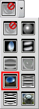
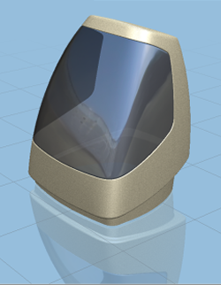
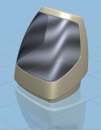
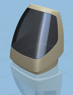

Apply different reflection maps to see the effect on the model
-
From the Global Reflection Map Drop-down list, select Photo Global Reflection Map .


Note the change of the glass reflection.
-
Try applying some other reflection maps.

Simulated Analysis 1

Shiny Metal

Photo 2

Brushed Metal